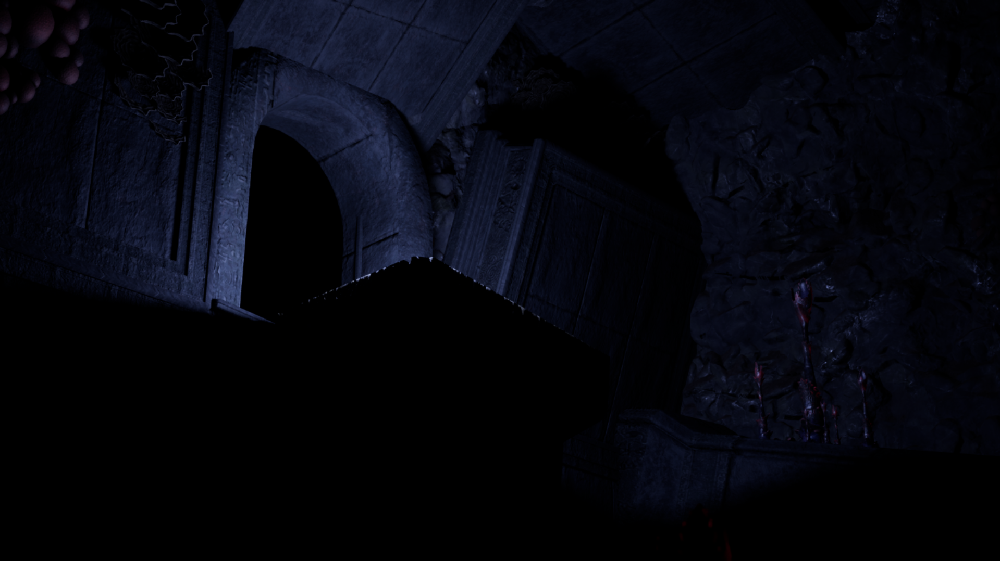
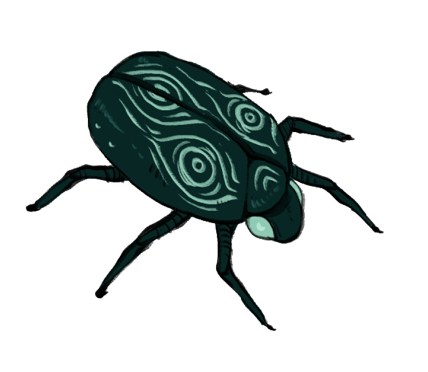
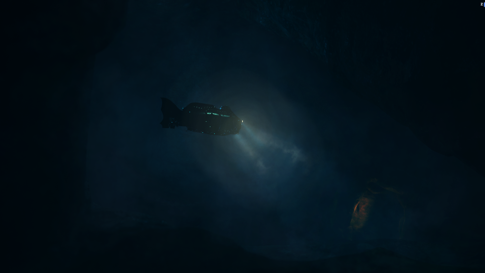
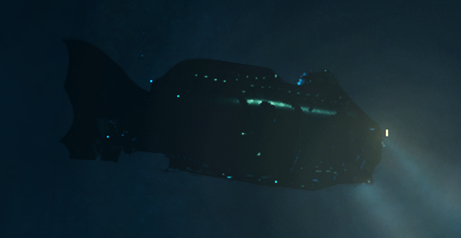

Entropy was a 9 week group project.
The project was to make a game and my group made a puzzle platformer made in unreal.
I made the platform that the player interacts with across the game.
The platform was made not just as a game play interaction but also with ease of use in mind. It has a in built debug tool,
easy swap model, easy pathing and a lot of customizable settings.
the platforms that I made were 2 different kinds, one that moved until you shot it and one that moved once you shot it, not the biggest difference but
required some differences in the code.
I also made a "vine generator" that didn't get finished. The spline generator was made to fallow along the ground of the objects around, laying on top of it,
so you could then have a model follow this path to have procedurally generated vines.


Nautilus was another 9 week project. The game was an atmospheric exploration game where you travel in a sub througth a cave sytem made in unity. I made the sonar system, dialog sytem and a few
unimplmented mechanics.
the sonar was made to interact with specific layers of the world. We for example didnt want the sonar to interact with the sub it self but everything outside of it.
it was customizable in a few ways as well, spin speed and amount of rays it fired out.
The dialog system was used in many places so needed to be easy to work with. There are two ways of calling it, either with a trigger box or by interactiving with parts of the world.
This would write out the dialog in dialog boxes and play a sound clip.
Then we have the unimplmented feature of Electorcal outage. There was supposed to be 3 hazords in the game. There ended up being non, but I did finnish one of them
it worked by gathering all the scripts that inhearets from cs_electricalobject and calling the functions on and off. It was simple and allowed to create multiple scripts to
achive different outcomes.
